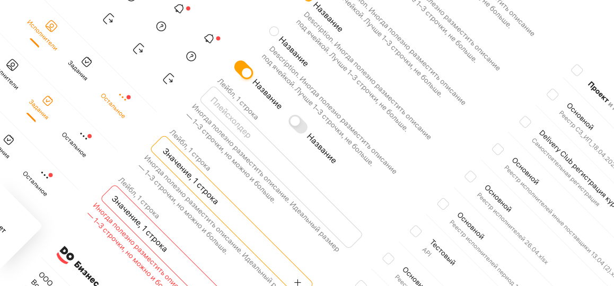
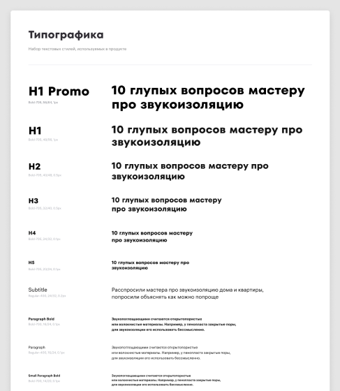
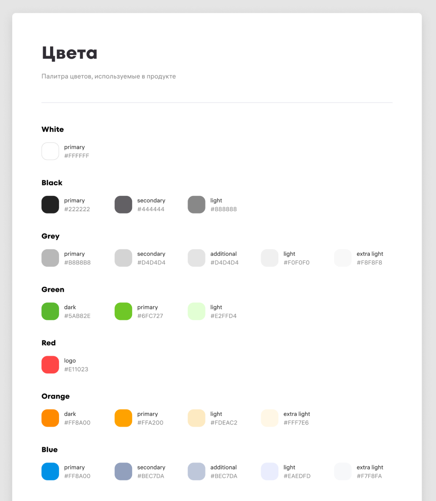
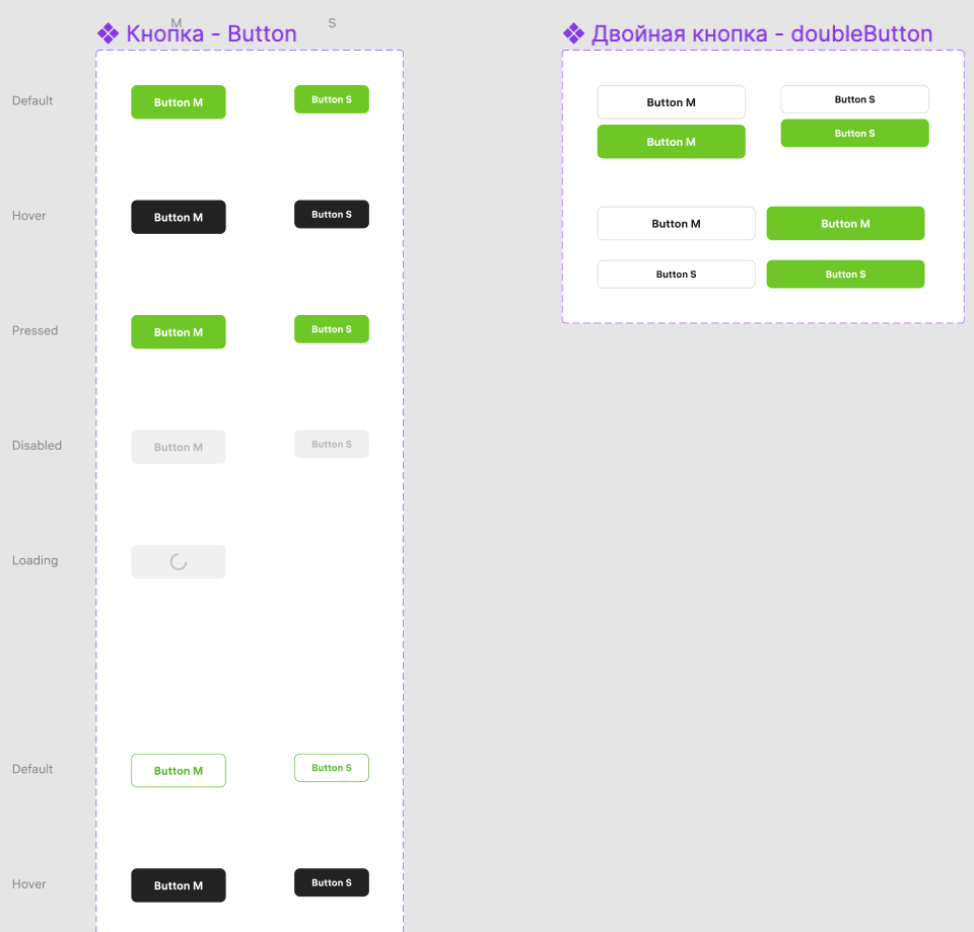
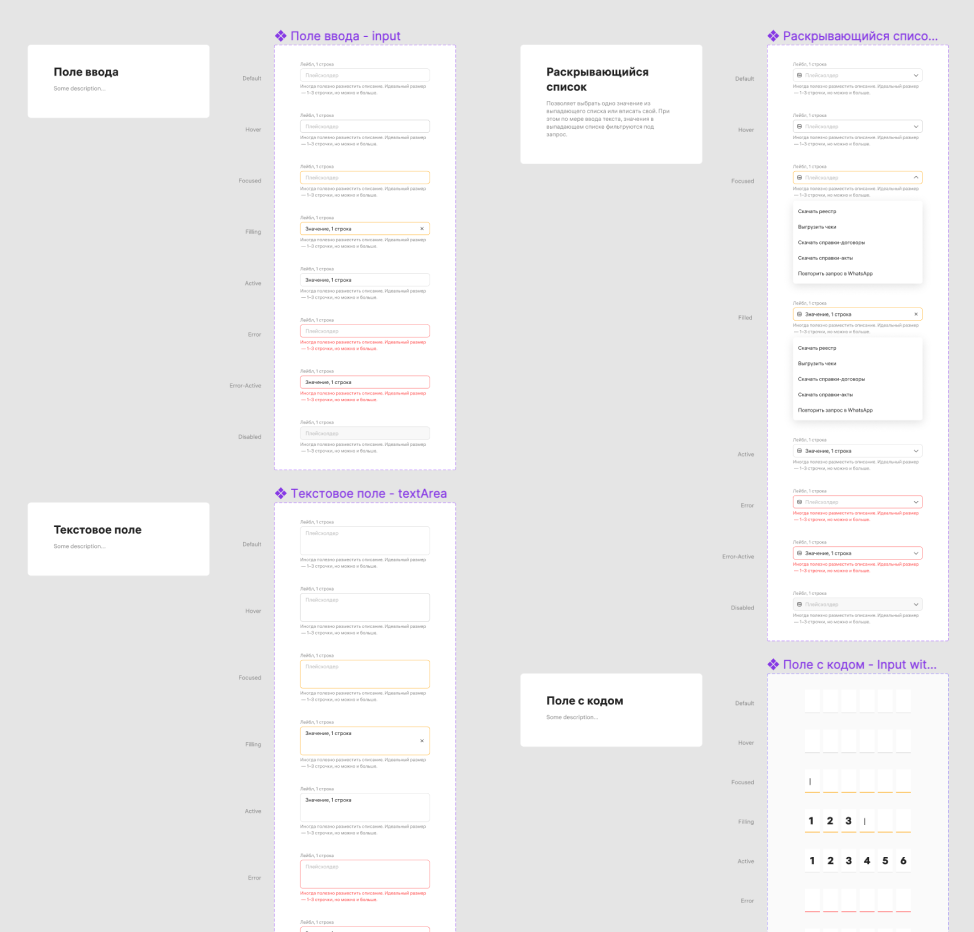
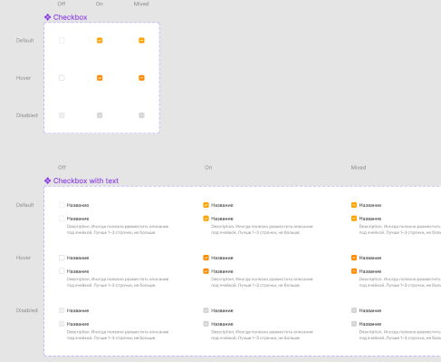
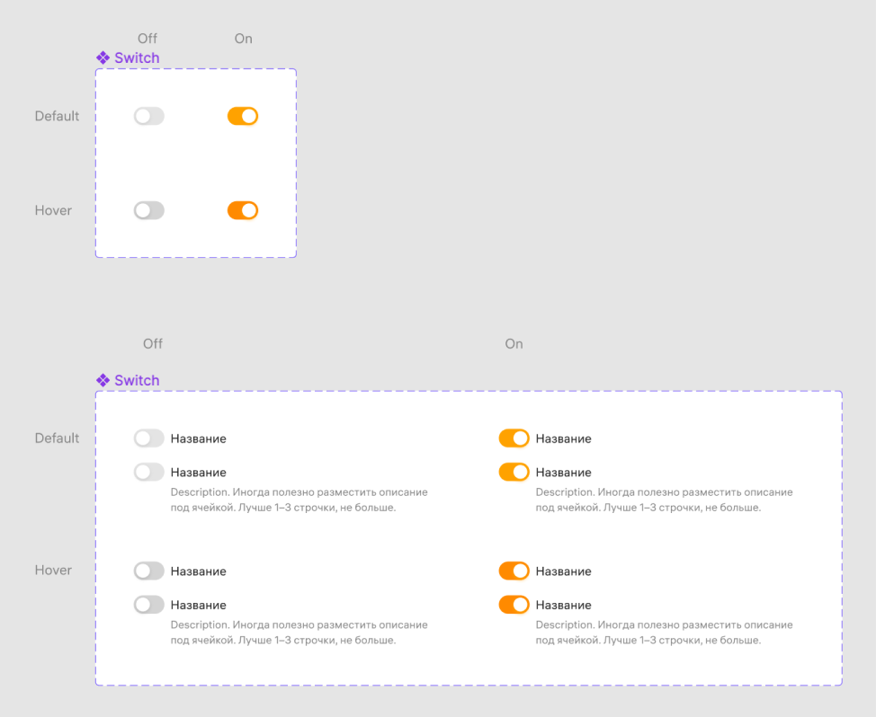

YouDo Business, 2022
Дизайн система YouDo Business
Создание полноценной дизайн системы продукта

О компании
YouDo Business - лидирующая в России платформа для взаимодействия с самозанятыми. Компания предлагает широкий спектр услуг для облегчения процесса формирования необходимой документации, взаимодейтсвия с исполнителями и уплаты налогов, обслуживая более 20 000 компаний каждый месяц. Более 3.5 млрд рублей ежемесячно отправляется 3.5 миллионам исполнителей.
Моя роль
Как единственный старший дизайнер продукта, я руководил разработкой и улучшением дизайн системы практически с нуля, включая создание компонентов в фигме, управление всем процессом внедрения в производство, согласование бюджета и т.д.
Бизнес цели
Дизайн система способствует сокращению времени и затрат на дизайн и разработку, позволяя командам сконцентрироваться на более сложных задачах. Использование дизайн системы обеспечивают согласованность интерфейса, поддерживают последовательность, создавая цельную и узнаваемую идентичность бренда, и в то же время улучшая пользовательский опыт. Так же при росте организации или продукта дизайн-система помогает поддерживать согласованность и удобство в управлении элементами дизайна даже в условиях повышенной сложности.
Исследования и анализ
По приходу в компанию YouDo моя первоочередная задача состояла в решении вопросов, связанных с дизайн-системой. Продукт уже вышел за рамки стадии MVP и активно развивался. Однако отсутствие разработанной дизайн системы затрудняло быстрое внедрение новых функций. После тщательного анализа текущей ситуации я выявил ряд критических проблем.
- отсутствовала общая база компонентов; использовались либо устаревшие, либо компоненты из соседнего продукта, либо вовсе не использовались
- вследствие отсутствия четкой структуры компонентов поиск необходимого элемента был затруднен
- отсутствовал библиотека шрифтов в фигме
- использовалось избыточное кол-во цветов, которые брались из соседнего продукта и применялись случайным образом, что приводило к чрезмерно яркому и хаотичному внешнему виду


Вот краткое описание того, чего удалось достичь в результате конвертации проблем в задачи и их декомпозиции:
Самостоятельная работа:
- сбор компонентной базы в фигме с использованием всего ее функционала (variants, auto-layouts, и т.д.)
- разработка собственной библиотеки шрифтов и цветовой палитры
- пересборка макетов, установление зависимостей
- написание гайдлайнов
Командная работа:
- презентация дизайн-системы стейкхолдерам, объяснение ее преимуществ и координация действий по ее разработке
- презентация и обсуждение с разработчиками, для реализации общей базы компонентов и токенов
- контроль, мониторинг и помощь при внедрении дизайн-системы в коде
За работу!
Сначала я начал самостоятельно работать над базой компонентов и ежедневно вносил улучшения. Разработка новых компонентов в фигме происходило параллельно с разработкой продуктовых фич, так как не было выделено отдельного времени для дизайна системы. Примерно после трех месяцев таких усилий мне удалось собрать почти все элементы в компоненты, стандартизировать базовые, сократить количество используемых цветов в продукте с 57 до 22, объединить компоненты, шрифты и цвета в одном файле в фигме и установить четкую структуру, чтобы избежать путаницы. Ниже приведены некоторые примеры компонентов.
{kind=link}

{kind=link}

{kind=link}

{kind=link}

{kind=link}

{kind=link}

Следующим шагом было самое сложное - представление работы и согласование бюджета на разработку в коде. Благодаря поддержке некоторых разработчиков, я смог убедить руководство в необходимости такого крупномасштабного проекта. Однако, так как у компании был сложный период, на тот момент не было доступных ресурсов для реализации. В результате мы отложили проект до конца года, и возобновили его в ноябре, как и было предварительно согласовано. Разработчики приступили к написанию кода компонентов и токенов с огромным энтузиазмом. Я оставался в постоянном контакте с ними, оказывал поддержку и отвечал на их вопросы.
Только заручившись поддержкой коллег мне удалось сдвинуть с мертвой точки этот проект. Когда ты работаешь в крупной компании с множеством заинтересованных лиц, тебе приходится преодолевать много политических аспектов, чтобы добиться успеха и делать классные изменения.
Результат
Совместно с командой разработки мы смогли синхронизировать и закодить большинство компонентов.
- разработка новых фичей ускорилась более чем на 30%
- количество вопросов от команды разработки по поводу дизайна снизилось, освободив мои ресурсы для выполнения продуктовых задач
- в процессе работы я углубился в UX продукта и исправил множество мелких проблем, к примеру валидация
- благодаря сокращению времени на разработку, мы смогли реализовывать более сложные фичи
- да и просто команде стало чуточку проще жить 🙂
В результате объемной работы над мобильным приложением, я получил ценный опыт разработки под мобильные ОС, узнал много нового про то, как работают мобильные приложение под капотом и на практике применил свои знания, относительно паттернов взаимодействия в мобильных приложениях.
Позже я узнал, что команда успешно продолжила начатое — проект уверенно двигался к релизу приложения и постепенной миграции со старого веб-интерфейса в новый формат, приближенный к полноценному мобильному опыту.